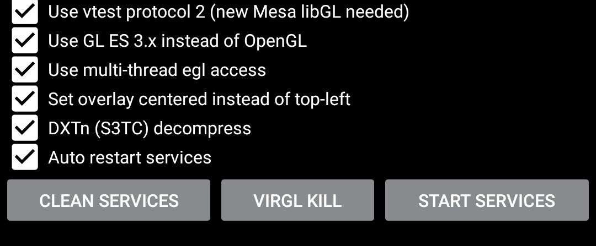
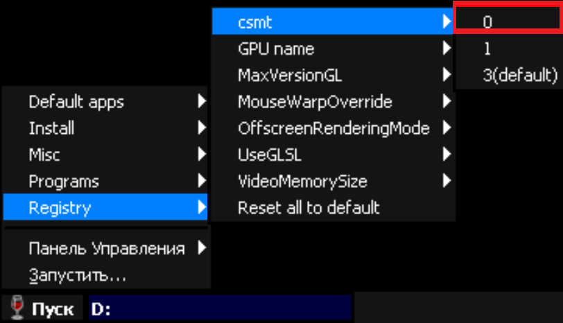

Exagear
ExaGear приложения являются эмуляторами среды Windows для Android, которые позволяет запускать разные игры и приложения с ПК.На данный момент актуальным является Exagear Windows, версии RPG и Strategies устарели. В настоящее время разработка прекращена, проект развивается только силами энтузиастов
Первый запуск
Существует много кэшей от разных людей, с разными версиями Wine. В данной инструкции в качестве примера будет использован Wine3.0.5_Hugo_22.08.22. Однако я рекомендую следить за выпуском новых кэшей.
- Скачайте данный архив, разархивируйте его.
- Вы увидите 3 разных APK, ED305.apk , ED305_android11+ и ED305_sdcard.apk. У ED305.apk стандартное расположение диска D: , папка Download. В ED305_android11+.apk диск D: будет находиться Android/data/com.hugo305.benchmark/files/Download. В ED305_sdcard.apk диск D: будет находиться на SD карте в папке Download.
- Скопируйте папку com.hugo305.benchmark в Android/obb. Установите нужный вам APK, запустите его.
Настройка
Существуют несолько типов рендера: Turnip+Zink - лучшая скорость, редкие графические баги. GPU только Adreno 6xx (поддерживаются не все). VirGL Overlay - хорошая скорость, частые графические баги. Необходим OpenGL ES 3.2.
- Зайдите в Exagear и создайте новый контейнер.Для этого нажмите на , после этого нажмите на Управление контейнерами. Затем нажмите на и контейнер создан. Что бы поменять упрвление или разрешение экрана нажмите на возле контейнера. Перейдите к ярлыкам. Нажмите на а потом на Рабочий стол.
- Выставьте все галочки как на скриншоте.
Для работы VirGL Overlay нажмите кнопку Clean services а затем Start services (данное действие нужно будет повторять при каждом новом заходе в приложение). - Нажмите на ярлык TFM (VTEST_WIN=1).
- Для некоторых устройств с проблеными процессорами нужно поставить csmt 0 для устранения зависаний в играх. 
Если у вас поддерживается Turnip+Zink пропустите 2 этап. Список поддерживаемых устройств.